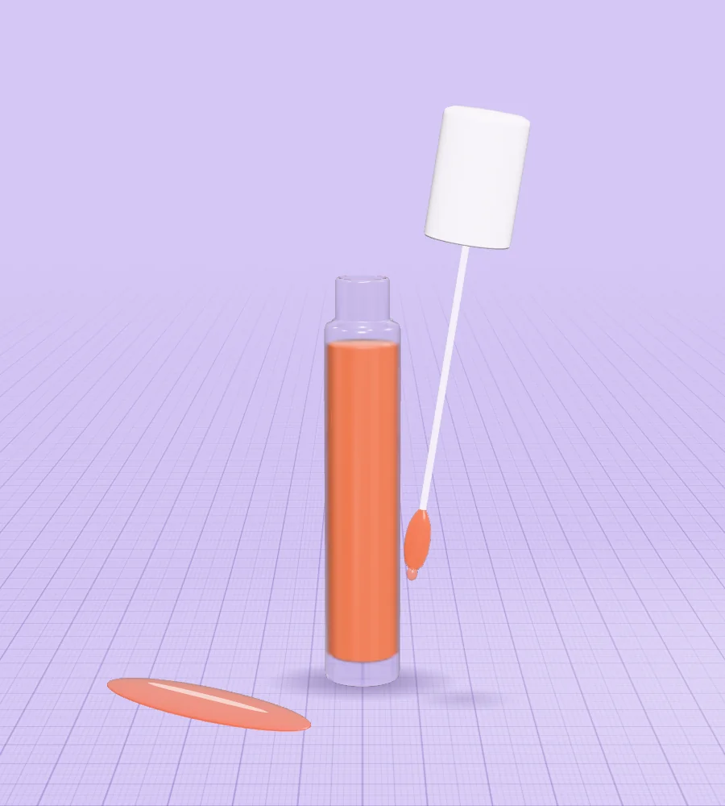
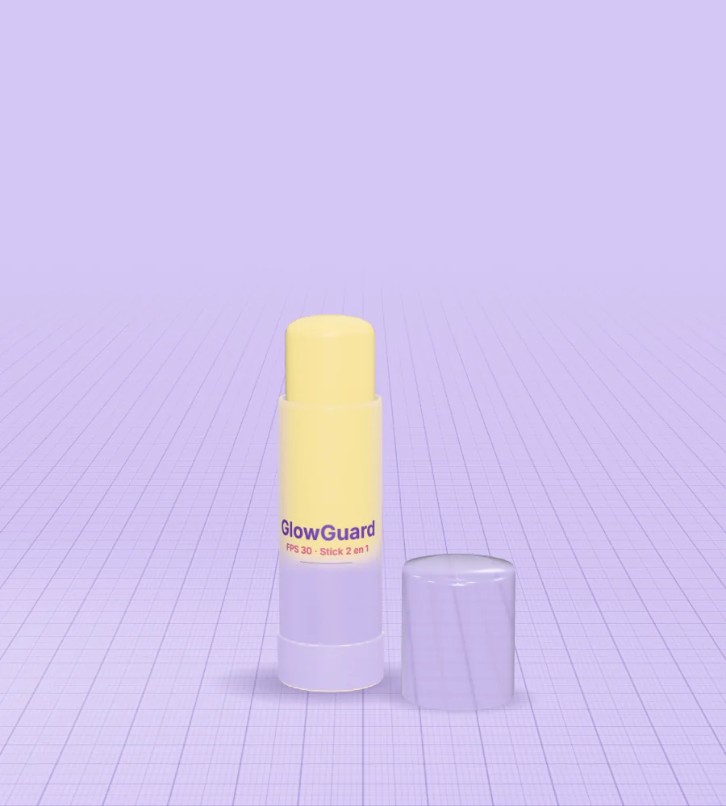

Laboratorio clínicoClinical laboratory
Proyecto de emprendimiento para un laboratorio clínico.
Startup project for a clinical laboratory.
Química Farmacéutica Bióloga. Del laboratorio a la conversación con el cliente.
Pharmaceutical chemist. From the lab bench to the customer conversation.
Soy QFB por la UNAM, con experiencia en formulación de productos de cuidado personal y del hogar en Ashland e investigación biomédica en el Instituto Nacional de Rehabilitación. Hablo inglés y español como lenguas nativas.
I’m a pharmaceutical chemist (QFB) from UNAM with hands-on experience in personal care and home care formulation at Ashland and biomedical research at Mexico’s National Institute of Rehabilitation. I’m a native speaker of English and Spanish.
En Ashland formulé productos de cuidado personal y del hogar, y presenté materias primas en seminarios orientados a su venta. Esa mezcla de laboratorio y trato con clientes es la que quiero seguir construyendo.
At Ashland I formulated personal care and home care products and presented raw materials in seminars aimed at sales. That mix of lab work and customer contact is what I want to keep building.
Roles en la industria cosmética o farmacéutica donde pueda combinar laboratorio y oficina.
Roles in the cosmetics or pharmaceutical industry that combine lab and office work.
2025
Ashland Chemical de México
Soporte Técnico, Personal & Home Care Specialties (productos de cuidado personal y del hogar)Technical Support, Personal & Home Care Specialties
Enero a agosto de 2025January to August 2025
2024
Instituto Nacional de Rehabilitación “Luis Guillermo Ibarra Ibarra”Mexico’s National Institute of Rehabilitation (INR)
Neurociencias ClínicasClinical Neurosciences
Febrero a noviembre de 2024February to November 2024
2019
Teleperformance
Cuenta de Reliant Energy (Estados Unidos)Reliant Energy account (United States)
Enero de 2019 a febrero de 2020January 2019 to February 2020
Desarrollo, formulación y costeo de un gloss anhidro con acabado espejo.
Development, formulation and costing of an anhydrous gloss with a mirror finish.
Catorce emulsiones con un solo emulsificante para ver cómo cambia la textura con el modificador reológico.
Fourteen single-emulsifier emulsions to see how texture changes with the rheology modifier.
Una crema que demuestra el uso de un emulsificante, hecha solo con ingredientes de la compañía.
A cream that showcases one emulsifier, made only with the company’s own ingredients.
Filtro solar facial en barra, FPS 30, formulado sin agua en un proyecto en equipo.
An SPF 30 facial sunscreen stick, formulated without water in a team project.
Proyecto final del diplomado: crear una empresa y gestionar sus finanzas de principio a fin.
Diploma capstone: create a company and manage its finances from start to finish.
Proyecto de emprendimiento para un laboratorio clínico.
Startup project for a clinical laboratory.
Investigación y video informativo sobre sulfonamidas.
Research and an informational video on sulfonamides.
Dos productos que formulé, del primer trazo a la fórmula final.
Two products I formulated, from the first line to the final formula.

Brillo que parece vidrio.Shine that looks like glass.
El efecto espejo viene de la fórmula: una base anhidra de aceites de alto brillo y mantecas vegetales. Sin agua, no hay emulsión que se pueda separar.
The mirror effect comes from the formula itself: an anhydrous base of high-gloss oils and plant butters. With no water, there is no emulsion to split.
Lo preparé en caliente y en dos fases: la base se funde y se homogeniza a 75–80 °C, y los antioxidantes y el conservador entran por debajo de 40 °C.
I made it with a hot, two-phase process: the base is melted and homogenized at 75–80 °C, and the antioxidants and preservative go in below 40 °C.
El color, un coral terracota, se mantiene parejo gracias a un polímero que dispersa los pigmentos. Costeé la fórmula por kilo y por envase.
The color, a terracotta coral, stays even thanks to a polymer that disperses the pigments. I costed the formula per kilo and per package.

Filtro solar facial en barra, 2 en 12-in-1 facial sunscreen stick
Protección que cabe en el bolsillo.Sun protection that fits in your pocket.
Es waterless: no lleva agua. Eso permite el formato en barra, más sostenible y fácil de llevar, que se aplica sin tocarlo con las manos.
It’s waterless. That makes the stick format possible: more sustainable, easy to carry and applied without touching it.
Fabricamos varios lotes y un panel sensorial de 15 personas eligió la fórmula final. Lo crítico fue el orden de adición, la temperatura y la agitación: así la barra salió translúcida y libre de partículas.
We made several batches and a 15-person sensory panel chose the final formula. The critical points were the order of addition, temperature and mixing, which kept the stick translucent and particle-free.
Translúcido y ligeramente amarillo, con textura semisólida, aroma a piña y acabado humectante sin sensación grasa.
Translucent and slightly yellow, with a semi-solid texture, a pineapple scent and a moisturizing finish that never feels greasy.
Dos productos, una misma forma de trabajar: del boceto a la fórmula.Two products, one way of working: from sketch to formula.
¿Se puede estabilizar una emulsión con un solo emulsificante? Casi siempre hacen falta dos o más. En Ashland lo probé con siete emulsificantes, la mayoría de la compañía, y dos modificadores reológicos derivados de celulosa, uno de ellos con modificación hidrofóbica.
Can you stabilize an emulsion with a single emulsifier? It usually takes two or more. At Ashland I tested seven emulsifiers, most of them the company’s own, with two cellulose-based rheology modifiers, one of them hydrophobically modified.
Con el mismo emulsificante, el modificador con cadenas hidrofóbicas dio hasta 4.6 veces más viscosidad, y con él las siete emulsiones resultaron estables. La hipótesis: esas cadenas se asocian entre sí y con las gotas de aceite, y forman una red que da cuerpo y frena la separación.
With the same emulsifier, the modifier with hydrophobic chains gave up to 4.6 times the viscosity, and all seven of its emulsions were stable. The hypothesis: those chains associate with each other and with the oil droplets, forming a network that adds body and slows separation.
Promedio del panel sensorial, 4 panelistas en escala de 1 a 5 (más alto es mejor), frente al promedio de las nueve fórmulas estables. Elige una fórmula.
Sensory panel averages, 4 panelists on a 1 to 5 scale (higher is better), against the average of all nine stable formulas. Pick a formula.
Las fórmulas que nacieron inestables solo se estabilizaron al añadir un coemulsificante. Lograrlo con uno solo sigue siendo el reto.
The formulas that started out unstable only held together once a co-emulsifier was added. Doing it with just one is still the challenge.
Una crema para demostrar un solo emulsificante.A cream built to showcase a single emulsifier.
El objetivo era mostrar el uso particular de un emulsificante de Ashland. Aproveché la formulación para usar solo ingredientes de la compañía, sin materias primas de otros proveedores.
The goal was to show what one Ashland emulsifier can do. I used the formula to include only the company’s own ingredients, with no raw materials from other suppliers.
La fórmula es confidencial. Aquí solo describo su propósito y sus resultados.
The formula is confidential. Here I only describe its purpose and results.
Escribí el procedimiento con el que el laboratorio opera uno de sus equipos de evaluación de piel, y trabajé a diario con instrumentos de formulación y de cultivo celular.
I wrote the procedure the lab uses to run one of its skin testing instruments, and worked daily with formulation and cell culture instruments.
Procedimiento Normalizado de OperaciónStandard operating procedure
Para el Centro de Aplicaciones de Cuidado Personal de Ashland. Lo redacté en 2025.
Written in 2025 for Ashland’s Personal Care Application Center.
Mide la hidratación del estrato córneo por capacitancia eléctrica: más agua en la piel, mayor lectura.
Measures stratum corneum hydration through electrical capacitance: more water in the skin means a higher reading.
Mide la elasticidad: succiona suavemente la piel y registra cómo se recupera.
Measures elasticity: it gently draws the skin in with suction and records how it recovers.
Mide el sebo con una cinta que se vuelve translúcida al absorber grasa de la piel.
Measures sebum with a tape that turns translucent as it absorbs oil from the skin.
El equipo integra estas sondas en un solo software que guía cada medición y registra los datos.
The system brings these probes together in one software that guides each measurement and logs the data.
En el diplomado de 240 horas resolvimos casos de impuestos, inversión y crédito. Este tablero resume algunos.
In the 240-hour diploma we worked through tax, investment and credit cases. This dashboard sums up a few.
Caso: servicios de conferencias, cierre del añoCase: a speaker’s services, year-end
En tasa 0% el saldo a favor nunca se compensa solo: conviene pedir la devolución. En exento el IVA no se recupera, pero se vuelve costo y la deducción de ISR sube de $1,126,322 a $1,306,533.52.
At the 0% rate the VAT credit never offsets on its own, so the move is to request a refund. When exempt, VAT isn’t recovered, but it becomes a cost and the income tax deduction rises from $1,126,322 to $1,306,533.52.
Caso: negocio de comida para perros, ISR del añoCase: a dog food business, annual income tax
Con pérdidas iniciales, actividad empresarial paga menos: las pérdidas se amortizan, mientras que RESICO grava el ingreso bruto.
With early losses, the business-activity regime pays less: losses carry forward, while RESICO taxes gross income.
Caso: departamento en Lomas Verdes, renta de febreroCase: an apartment in Lomas Verdes, February rent
Sin gastos comprobables, la deducción ciega del 35% más el predial deja una base gravable de $6,050 sobre $17,000 de renta.
With no receipts to claim, the 35% blind deduction plus property tax leaves a taxable base of $6,050 out of $17,000 in rent.
Simulación con 2 millones de pesos, horizonte de 3 semanas2-million-peso simulation, 3-week horizon
El análisis fundamental y técnico (RSI, MACD y medias móviles) marcó un riesgo de concentración en el sector financiero.
Fundamental and technical analysis (RSI, MACD and moving averages) flagged a concentration risk in the financial sector.
Calculadora: método francés y alemánCalculator: French and German methods
Ejemplo ilustrativo: inversión de $500,000 y cinco años de flujosIllustrative example: a $500,000 investment and five years of cash flows
Casos prácticos del Diplomado en Finanzas, Facultad de Química, UNAM, 2026. Cifras en pesos mexicanos. La calculadora y el VPN usan datos de ejemplo.
Practice cases from the Diploma in Finance, UNAM School of Chemistry, 2026. Figures in Mexican pesos. The calculator and the NPV card use sample data.
2019–2025
Universidad Nacional Autónoma de México, Facultad de QuímicaNational Autonomous University of Mexico (UNAM), School of Chemistry
Titulación por diplomado en 2026. Título y cédula profesional en trámite.
Graduated in 2026 via a 240-hour diploma in lieu of thesis. Degree certificate and cédula profesional in process.
2026
UNAM, Facultad de QuímicaUNAM, School of Chemistry
Matemáticas financieras, amortizaciones, inversiones, nómina e ISR, ventas, mercadotecnia y administración.
Financial mathematics, amortization, investments, Mexican payroll and income tax, sales, marketing and administration.
Busco mi siguiente rol en la industria cosmética o farmacéutica. Escríbeme por correo o por WhatsApp.
I’m looking for my next role in the cosmetics or pharmaceutical industry. Reach me by email or WhatsApp.
jennysherly2000@gmail.comCiudad de MéxicoMexico City